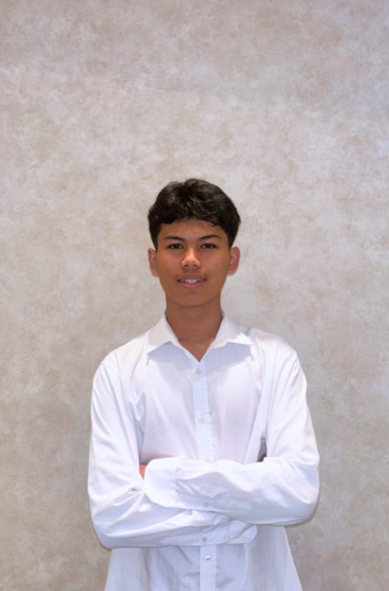

Bahasa Pemrograman & Markup
-
HTML5 & CSS3
30% -
Python
40% -
Java
20%

Mahasiswa Sistem Informasi • Universitas Airlangga
Halo! Nama saya Dwi Maulidan, mahasiswa semester empat Program Studi Sistem Informasi di Universitas Airlangga. Saya memiliki ketertarikan yang besar terhadap dunia pengembangan web, khususnya dalam membangun antarmuka pengguna yang intuitif dan aksesibel.
Saat ini saya aktif mempelajari teknologi web modern,
mengerjakan proyek-proyek open source, dan berpartisipasi
dalam komunitas developer lokal. Saya percaya bahwa
kode yang baik adalah kode yang mudah dibaca oleh manusia
.
| Jenjang | Nama Institusi | Jurusan / Program Studi | Periode |
|---|---|---|---|
| S1 (Sarjana) | Universitas Airlangga | Sistem Informasi | – Sekarang |
| SMA | SMA Negeri 18 Surabaya | MIPA (Matematika & Ilmu Pengetahuan Alam) | – |
| SMP | SMP Negeri 32 Surabaya | — | – |
Marketplace jasa dan produk lingkungan berbasis web yang dirancang untuk menghubungkan penyedia solusi ramah lingkungan dengan masyarakat yang membutuhkan. Sistem ini memungkinkan vendor untuk menawarkan produk eco-friendly maupun jasa berbasis keberlanjutan, seperti layanan daur ulang, konsultasi lingkungan, atau pengelolaan limbah, sementara pengguna dapat mencari, memilih, dan melakukan transaksi secara online melalui satu platform terintegrasi.
Teknologi: